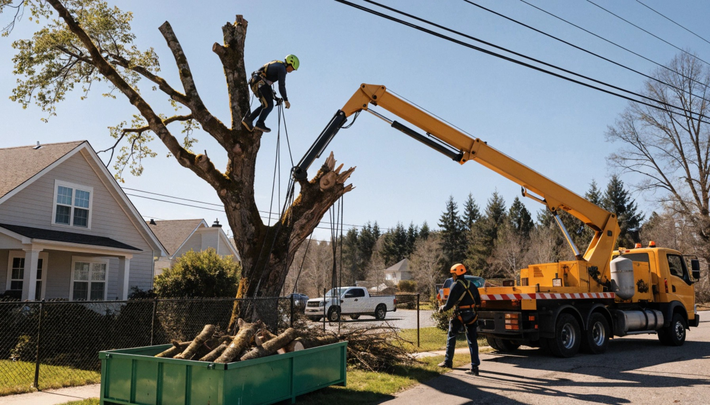
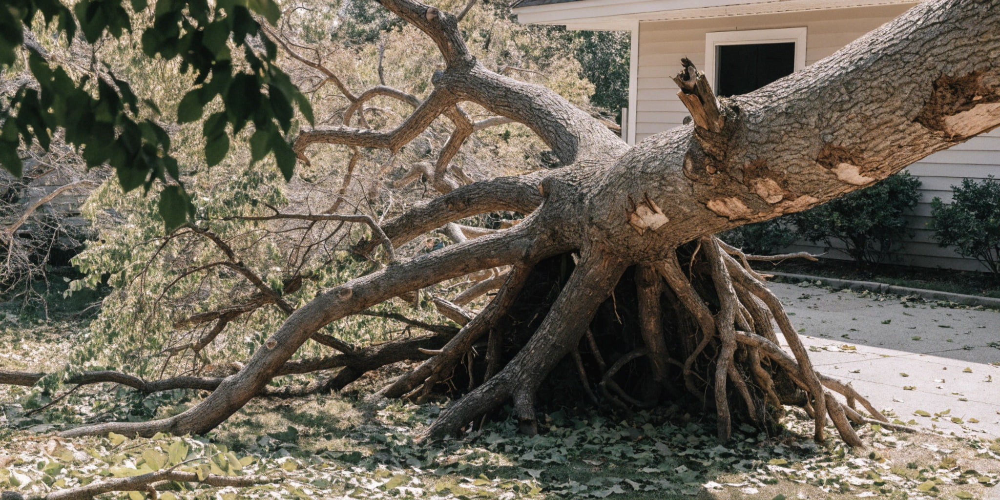
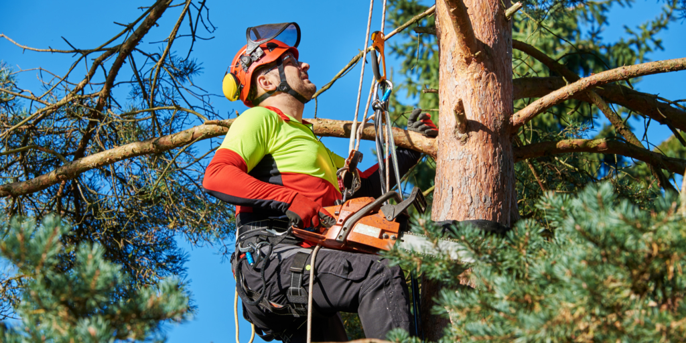
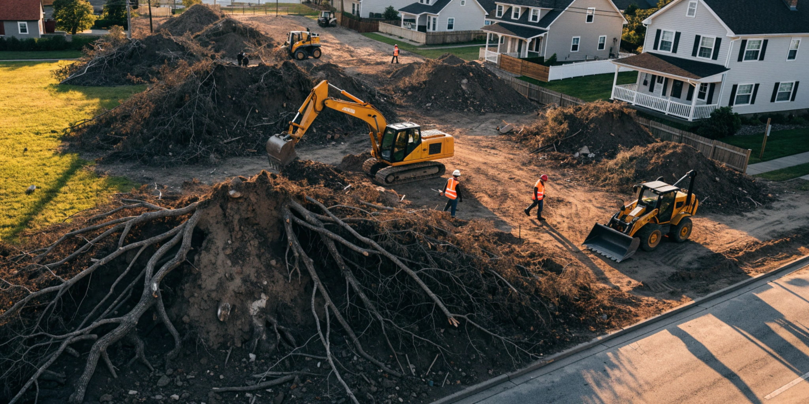
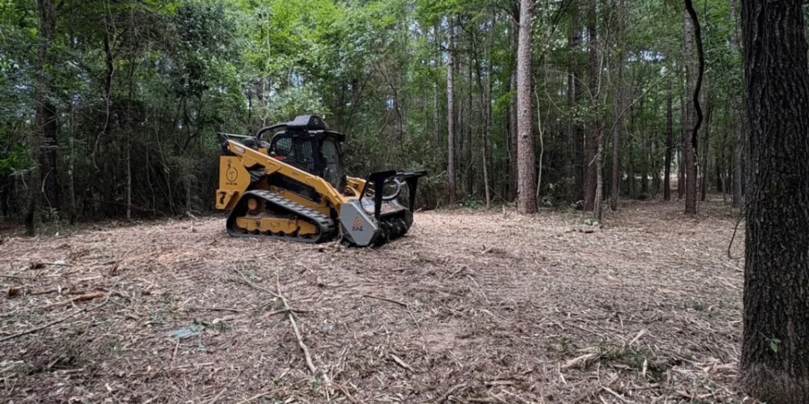
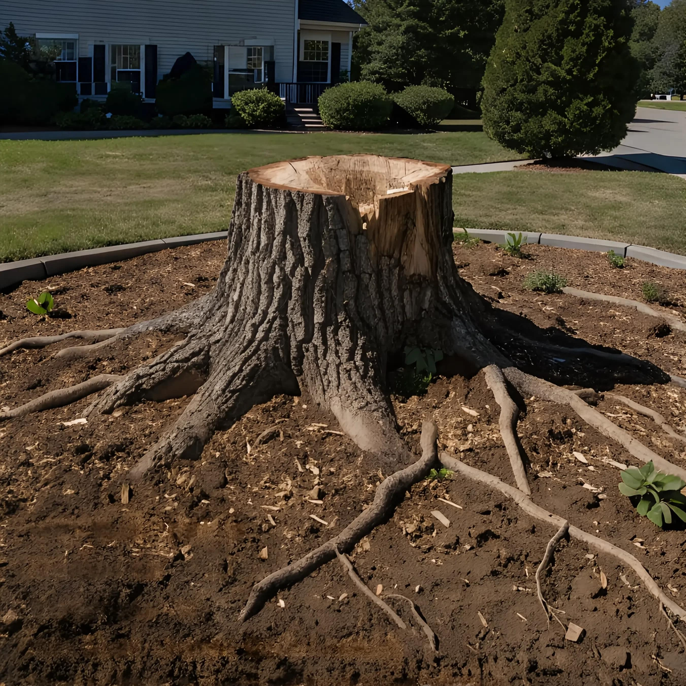
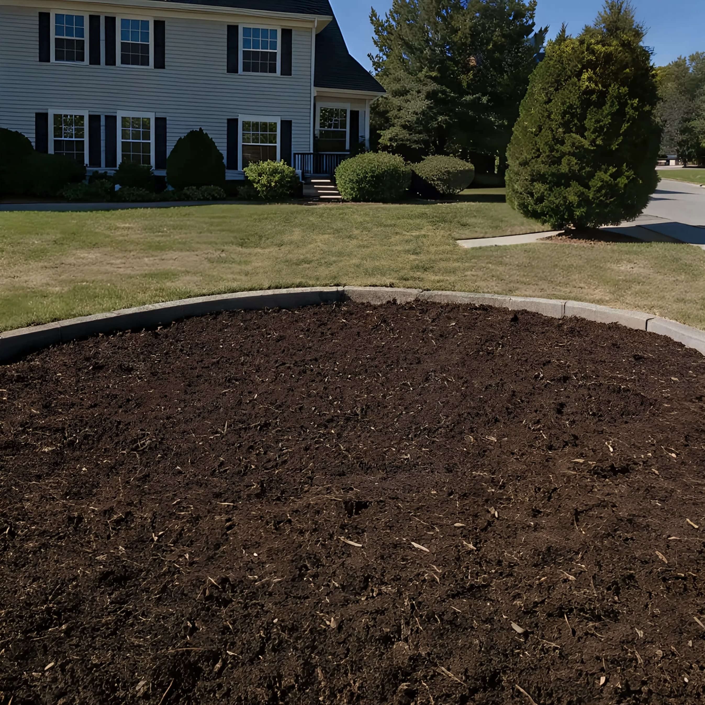
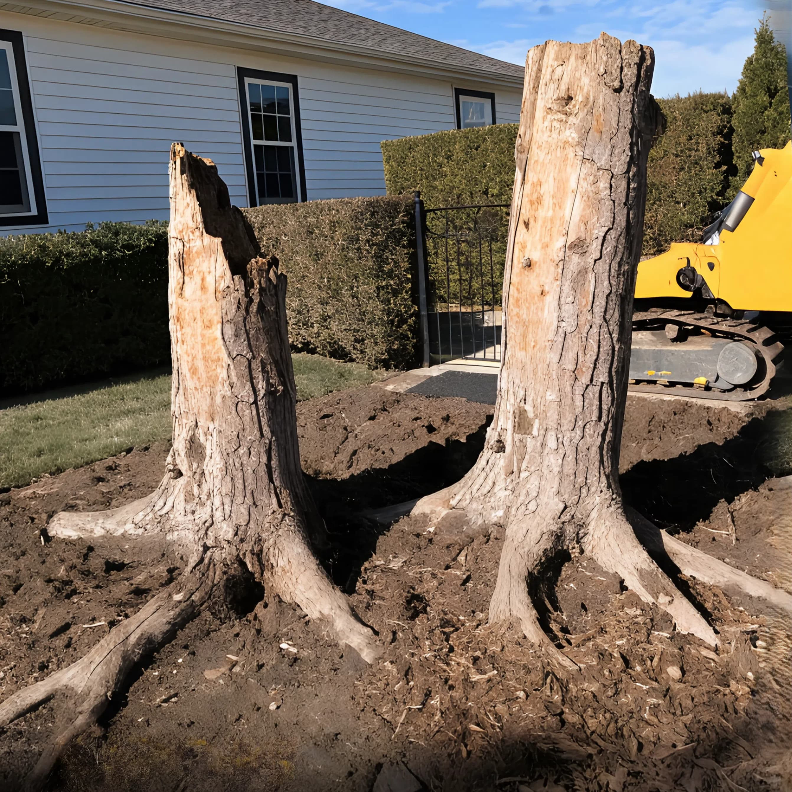
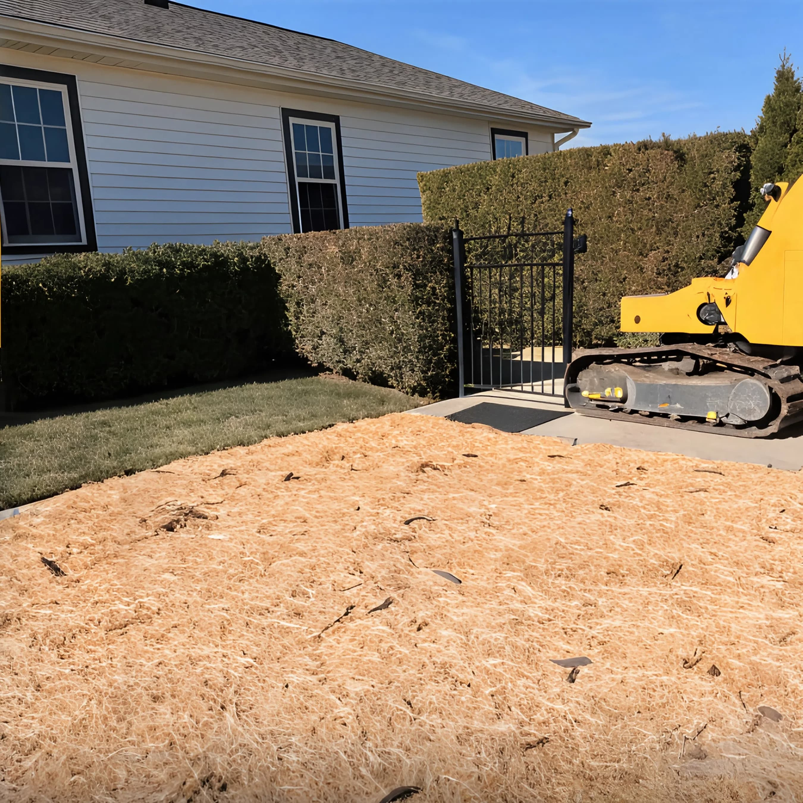

Professional Stump Grinding & Tree Care in North Alabama
Eliminate tripping hazards and ugly tree stumps fast. Fully licensed, insured, and equipped with turf-safe tracked machines for narrow backyard gate access.
Instant Stump Calculator
Estimate grinding costs in real time
Comprehensive Property Care Solutions
From single backyard stumps to multi-acre clearing, we deliver fast, reliable, and lawn-friendly results in North AL.
.jpg)
Precision Stump Grinding
Grinding 6-8" below grade. Removes root flares and prepares soil for grass seed, sod, or immediate replanting.
- Tracked machinery fits 36" gates
- Includes mulch backfill options

Full Tree Removal
Safe takedown of hazardous, diseased, or storm-damaged trees near structures, powerlines, and fences.
- Rigging & controlled dismantling
- Complete wood haul-away

Emergency Tree Service
Immediate dispatch for fallen trees or hanging limbs endangering homes, roofs, or driveways after North AL storms.
- Rapid phone assessment
- Insurance claim assistance

Tree Trimming & Canopy Thinning
Deadwooding, canopy elevation, and crown reduction to improve tree health, light penetration, and roof clearance.
- Structural pruning & deadwood removal
- Roof & power line clearance

Lot & Land Clearing
Underbrush clearing, sapling removal, and site preparation for home builds, fence line expansion, and pastures.
- Heavy brush & sapling removal
- Complete site preparation

Surface Root & Topsoil Service
Targeted grinding of exposed surface roots destroying lawnmower blades, followed by chip haul-away and topsoil grading.
- Lawn mower blade protection
- Fresh topsoil & re-seeding setup
How To Get A Flat-Rate Photo Quote
Get an exact price in 15 minutes right from your phone. Here is all we need:
Measure The Stump
Measure the stump width across the widest point at ground level, including the extended root flare.
Snap 2 Photos
Take one close-up photo of the stump and one wide photo showing the backyard access path and gate.
Text & Get Flat Quote
Upload photos online or text them directly to (256) 555-0199. Receive a firm price back in 15 mins!
Stump Grinding Pricing Benchmarks
Cost factors depend on stump diameter, species hardness, ground depth, and backfill requirements.
| Stump Size Range | Typical Diameter | Estimated Cost | Best For |
|---|---|---|---|
| Small Stump | < 12 inches | $150 - $180 | Small crape myrtles, dogwoods, saplings |
| Medium Stump | 12 - 24 inches | $180 - $280 | Pine trees, small oaks, sweetgums |
| Large Stump | 24 - 36 inches | $280 - $420 | Mature hardwoods, widespread root flare |
| Extra Large / Multiple | 36+ inches or 3+ stumps | Custom Volume Discount | Lot clearing, multiple back yard stumps |
Proudly Serving Huntsville & Surrounding Suburbs
We navigate North Alabama's tough red clay soil and underlying limestone bedrock with commercial-grade stump grinders. Fast service across Madison and Limestone counties.
Serving All Neighborhoods Within 30 Miles of Huntsville
Including Clift Farm, Jones Valley, Hampton Cove, Monrovia, Owens Cross Roads, and Green Mountain.
Before & After Grinding Transformation
See how we restore smooth, safe, mowable lawns in a single afternoon.


30" Oak Stump Removal in Madison, AL
Ground 8 inches below grade, surface roots eliminated, area backfilled level with wood mulch.


Dual Pine Stumps in Huntsville Backyard
Tight 34" gate entrance accessed easily with tracked machine. Completed in under 1 hour.
"Sent two pictures from my phone and had a quote within 10 minutes. They showed up the next morning, navigated my narrow gate without touching the fence, and ground out a huge oak stump!"
"Other companies wanted to take down my fence panel to get their equipment in. Huntsville Stump Removal brought a compact tracked machine that slid right through my 36" gate. Outstanding job."
"Fair price, polite crew, and they took care of the 811 utility line locates before grinding so we didn't hit any fiber optic or gas pipes. Highly recommend!"
Frequently Asked Questions
Everything you need to know about professional stump grinding and property restoration.
Ready For a Clean, Hazard-Free Lawn in Huntsville?
Send us 2 quick photos of your stump right from your phone. We'll text you back a firm, flat-rate quote in under 15 minutes!